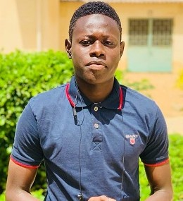

Identité
- NOM: DIANGAR
- Prénoms: Ousmane
- Téléphone: +221 77 341 24 66
- Mail: odiangar98@gmail.com
- Age: 23ans , célibataire
- Lieu de naissance: Faoye/Fatick/Sénégal
Formation
2020-2021: ESMT de Dakar
- Formation ingénieur en informatique et télécom (IGIT)
2018-2019:CFPT Sénégal-Japon
- Brevet de Technicien Supérieure (BTS) en informatique industrielle et Réseaux
2016-2017:Lycée Seydina Limamoulay de Dakar
- Baccalauréat, série S3
2013-2014:CEM de Diofior 1
- Brevet de fin d'étude moyen
2009-2010:Ecole Coly Diam de Faoye
- Certificat de fin d'Etude Elémentaire
Diplômes
- 2021: Diplômes d'ingénieur en informatique et télécom
- 2019: Diplômes de Technicien Supérieure (BTS) en informatique industrielle et Réseaux
- 2017: Diplômes de Baccalauréat, série S3
- ......
Expériences professionnelles
2017 – 2018
- Stage en maintenance informatique
- Au ministère de l’Economie, des finances et du Plan (DGB)
- Durée 1 mois
Divers
LANGUES
- Français: Courant
- Anglais: Notion
- Wolof: Courant
- Sérère: Courant
CENTRES D’INTERET
- Lecture
- Dessin
- Association: De 2015 à maintenant: membre de l’ASC des jeunes pour l’émergence de Faoye (AJEF).
- Sport (football, fitness)